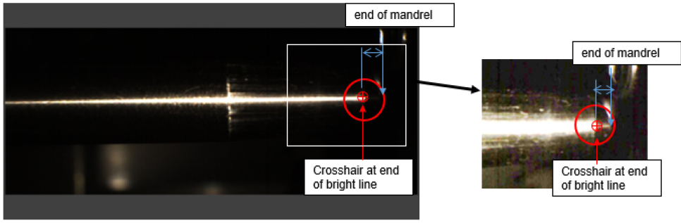

Calibrating the Aliquot Sample Pipettor Camera
This topic includes information about calibrating the aliquot sample pipettor camera.
Note: See
Calibrating Cameras for more information about calibrating all cameras.
Note: In software version 1.17.2 and later, the Aliquot Sample Pipettor Check of Tip Check camera calibration replaces the former Aliquot Pipettor Tip Discard camera calibration.
Note: During a procedure, if you use the In-Sight Explorer application to make an adjustment, after you make an adjustment, be sure to click an empty cell so that the spreadsheet formula calculations update.
Prepare the Instrument for Camera Calibrations
- Be sure there is enough substrate, wash buffer, and reaction vessels in the instrument to prime the instrument and to complete the desired calibrations.
- Initialize the instrument. See Initializing the Instrument for more information.
- Prime the instrument. See
Priming the Instrument for more information.
Note: Initialization and priming may take several minutes.
- In the Console App select the SYSTEM RUNNING button and go to to enter the instrument into a YELLOW (Paused) status.
Calibrating the Aliquot Sample Pipettor LED/Exposure Setting
- Be sure the instrument is in a YELLOW (Paused) status.
- In the Console App go to to open the Intrusive Diagnostics page.
- Press the Windows key and go to to open the In-Sight Explorer application.
- In the In-Sight Explorer application go to to open the In-Sight Network pane.
- In the In-Sight Network pane, right-click the aliquot sample pipettor camera and select Show Spreadsheet View.
- In the Console App on the Intrusive Diagnostics page select Start Session to enter the instrument into a BLUE (Maintenance) status.
- Select Camera Calibration to open the Camera Calibration page.
- In the Camera Function column select the Aliquot Sample Pippettor LED/Exposure Setting checkbox.
- Clear any other checkboxes.
- Select Start Camera Calibration.
- Follow the steps in the Status pane.
- If the camera setting passes calibration, the Last Calibration column will display Today and the Result column will display Pass, and the Status pane will display the notification Operation completed: Camera Calibration.
Calibrating the Aliquot Sample Pipettor Mandrel Setting
- Be sure the instrument is in a YELLOW (Paused) status.
- In the Console App go to to open the Intrusive Diagnostics page.
- Press the Windows key and go to to open the In-Sight Explorer application.
- In the In-Sight Explorer application go to to open the In-Sight Network pane.
- In the In-Sight Network pane, right-click the aliquot sample pipettor camera and select Show Spreadsheet View.
- In the Console App on the Intrusive Diagnostics page select Start Session to enter the instrument into a BLUE (Maintenance) status.
- Select Camera Calibration to open the Camera Calibration page.
- In the Camera Function column select the Aliquot Sample Pippettor Mandrel checkbox.
- Clear any other checkboxes.
- Select Start Camera Calibration.
- Follow the steps in the Status pane.
- In In-Sight Explorer, select the
Overlay icon and verify the locations shown by a red crosshairs.
Note: The crosshairs should be located on the end of the bright line (the generating line of the mandrel) or the very end of the mandrel. If it is in the red circle, which is centered on the end of the bright line and which passes through the end of the mandrel, it is determined as PASS. See the photo below:

- If the camera setting passes calibration, the Last Calibration column will display Today and the Result column will display Pass, and the Status pane will display the notification Operation completed: Camera Calibration.
Calibrating the Aliquot Sample Pipettor Check of Tip Check Setting
- Be sure the instrument is in a YELLOW (Paused) status.
- In the Console App go to to open the Intrusive Diagnostics page.
- Press the Windows key and go to to open the In-Sight Explorer application.
- In the In-Sight Explorer application go to to open the In-Sight Network pane.
- In the In-Sight Network pane, right-click the aliquot sample pipettor camera and select Show Spreadsheet View.
- In the Console App on the Intrusive Diagnostics page select Start Session to enter the instrument into a BLUE (Maintenance) status.
- Select Camera Calibration to open the Camera Calibration page.
- In the Camera function column select the Aliquot Sample Pipettor Check of Tip Check checkbox.
- Clear all other check boxes.
- Select Start Camera Calibration.
- Follow the steps in the Status pane.
- If the camera setting passes calibration, the Last Calibration column will display Today and the Result column will display Pass, and the Status pane will display the notification Operation completed: Camera Calibration.